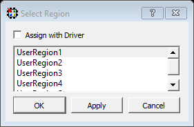
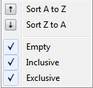

9.2 Chip Planner Views
(Ask a Question)When the Chip Planner launches, it opens the following windows:
- Design View window
- Floorplanner View window
- Log window
- Display Options window
- Properties window
- World View window
All windows can be docked or undocked (floating), turned on or off, resized, or moved to the right, left, top, or bottom of the Chip Planner application. Docked windows can be stacked horizontally or vertically.
The Design View window provides the following view tabs for the design:
- Port
- Logical
- Net
- Region
- Block (only when the design instantiates a design block)
The following table lists the icons in the toolbar. Hover the mouse on the icon shown in the Floorplanner View to see the tooltip.
| Icon | Name | Function |
|---|---|---|
| Commit | Commit and Save behaves as follows:
|
|
| Undo | Reverses your last action. | |
| Redo | Reverses the action of your last Undo Command. | |
| Highlight | Highlights a net, macro, or port. | |

|
Unhighlight All | Unhighlights all highlighted selections (macro, net, or port). |
Clone and Clear Options
The Clone and Clear options appear when you right click on the main object browser/design view window. The following table describes these options.
| Icon | Name | Function |
|---|---|---|

|
Clone new filter | Clones a Find window for a specific view (Logical/ Port/Net/Region/Block) depending on the view you are in when you click this icon or CTRL + F. Multiple Find windows may be cloned, each with a different set of filtering criteria, to provide multiple filtered views of design elements. |
|
|
Delete all filter browsers | Deletes all cloned Find windows. |
| Delete all port filter browsers | Deletes all cloned port filter windows. | |
| Delete all net filter browsers | Deletes all cloned net filter windows. | |
| Delete all region filter browsers | Deletes all cloned region filter windows. | |
| Delete all block filter browsers | Deletes all cloned block filter windows. | |
| Rename | Renames the cloned window to a name other than the default name. |
- Port
- Logical
- Net Region
- Block
| Icon | Name | Function |
|---|---|---|
| Reapply the Filter | Reapplies the filter and sort. | |
| Filter | Applies the filter to design object display. | |
| Collapse | Collapses the hierarchical display in the view. | |
| Expand | Expands the selected design object. | |
| Clear | Clears the Filter and refreshes the tree reflecting no filters applied. | |
| Change Sort Order and allow Additional Filtering | Changes sort order between
ascending and descending, or applies additional filtering. Sort and Filter criteria vary with the view. |
|
| Dock | Docks the cloned Find window. This option is available only in the cloned Find window. | |
| Maximize | Maximizes the cloned Find window. This option is available only in the cloned Find window. | |
| Restore | Restores back to the cloned Find window. This option is available only in the maximized clone Find window. |
All Chip Planner windows can be docked or undocked.
| Icon | Name | Function |
|---|---|---|
| Dock/Undock | Docks or undocks (floats) the window. | |
| Close | Closes the window. |
Chip Planner provides the following special keys and hot keys.
| Special Keys/Hot Keys | Function |
|---|---|
| CTRL + F | Find/Search function. Creates a cloned Find window. |
| CTRL + Z | Undoes the last action/command. |
| CTRL + S | Saves all changes. |
| CTRL + Y | Redoes last action/command. |
| Home | Scrolls to the first selected item in the view. |
| End | Scrolls to the last selected item in the view. |
| Tab | Scrolls to the next selected item in the view. |
| Shift + Tab | Scrolls to the previous selected item. |
| CTRL + Q | Exits Chip Planner. |
| CTRL + ++ | Zooms in. |
| CTRL + -- | Zooms out. |
| CTRL + 0 | Zooms to fit. |
| CTRL + H | Locks all macros. |
| SHIFT + CTRL + H | Unlocks all macros. |
| Hold SHIFT + Left_Mouse Click | Selects multiple elements in Design View Windows. If you select two items, the items and all items between them are selected. |
| Hold CTRL + Left Mouse click | Selects multiple elements in Design View windows. |
| ESC | Unselects all selected items and removes any pop-up windows. |
| <Right Arrow key> | Selects the element at next level of hierarchy in the Design Flow window. |
| <Left Arrow key> | Selects the element at previous level of hierarchy in the Design Flow window. |
| <Down Arrow key> | Selects the next element at the same level of hierarchy in the Design Flow window. |
| <Up Arrow key> | Selects the previous element at the same level of hierarchy in the Design Flow window. |
9.2.1 Design View Window and View Tabs
(Ask a Question)When Chip Planner opens, it presents a Design View window with five view tabs:
- Port
- Logical
- Net
- Region
- Block - only if user blocks (*.cxz files) exist in the design
Each of the view tabs displays a design view. A selection of a design element in one view is reflected in other views. For example, when you click and select a bus port in the Port View, the Logical View shows the OUTBUF/INBUF primitives (for the bus) selected and the Net View shows the net (connected to the INBUF/OUTBUF of the port) selected.
Similarly, when a user region is selected in the Region View, the selection is reflected in the Floorplanner View as well.
The Design View window can be docked and undocked.
9.2.2 Find Window
(Ask a Question)Chip Planner provides a Find window for each of the five design views to search for design elements. You can also use the CTRL + F Hot Key. Multiple Find windows can be created for the same design view (Port/Logical/Net/Region/Block).
When the Find window opens, it is associated with a specific design view. Only design elements specific to the particular view are displayed. The view name (Port/Logical/Net/Region/Block) is displayed across the top of the window.
You can create multiple cloned Find windows for each view. Cloned Find windows are floating when they are opened and can be resized, moved, docked, or undocked (floating).
When the Find window is invoked in the Logical view, for example, the find window opens with the name Find (Logical) across the top of the window and the name Find # (Logical) across the top of the window when there are multiple cloned Find windows for the same View.
By default, each cloned Find window is named sequentially as Find 1 (<view_name>), Find 2 (<view_name>), Find 3 (<view_name>), and so on. The cloned Find windows can be renamed to a name different from the default.
A cloned Find window has the same features and functionality as the main view window. In addition, a cloned Find window has an additional icon called Rename Tree, which renames the cloned Find window to a name other than the default name.
Multiple Find windows are useful in floorplanning. For example, if your design has both a RAM and a MACC block, and want to filter, select both, and display them in the Floorplanner View, you need two Find windows for the logical view: one with the filter based on Macro type > RAM and the other with the filter based on Macro type > MACC.
9.2.2.1 Search and Filter
(Ask a Question)- Open the Find windows and search for specific design elements.
-
Click the Filter icon () in the Design View window or any cloned Find windows to
search and filter the display. Three types of searches are available:
- Wildcard Filter—such as “*” or “?” in the filter for wildcard matching. For example, when you type FDDR* in the filter, the FDDR component and all its lower level primitives are displayed.
- Use Regular Match Filter.
- Regular Expressions—posix case insensitive regular expression search.
Note: All filtering is case-insensitive.
9.2.3 Port View
(Ask a Question)The Port View shows a hierarchical view of a design’s Input, Output, and Inout ports. Regular I/Os and Dedicated I/Os are displayed as follows:
- Regular I/O ports—Input/Output/Inout ports that you can change or reassign. These appear under the I/O Ports tree.
- Dedicated I/Os—Special-purpose I/Os that cannot be changed or
reassigned by you. These are shown under the Dedicated Ports
tree.
Figure 9-5. Port View (Dedicated Ports)
9.2.3.1 Port Buses
(Ask a Question)Scalar members of a bus port are grouped under the bus. All bus ports can be collapsed or expanded as shown in the following figure.
9.2.3.2 Port Properties
(Ask a Question)To see the properties of the port, select the port. The properties of the port you selected is displayed in the Properties Window. The selected port is also highlighted in the Floorplanner View and the World View.
9.2.3.3 User Actions in Port View
(Ask a Question)In the Port View, you can:
- Place ports to locations—Select a port, and then drag and drop it into the Floorplanner View at a valid resource location to assign the element to that location. All valid port locations are highlighted when you drag the selected element into the Floorplanner View.
- Unplace ports from locations—Right click the port and choose Unplace From Location to unassign a port.
- Lock Port to location—Right click the port and choose Lock Placement to lock selected port to the assigned location. This option is enabled only when the port is already placed in a location.
- Unlock Port from location—Right click the port and choose Unlock Placement to unassign the port. This option is enabled only when the port is already locked to a location.
- Region Assign—Right click a port and choose Region Assign. The Select Region dialog opens, and shows the regions available to assign that element. This dialog opens even if there are no User regions to which the selected item can be assigned. See the following figure.
- Unassign Port from Region—Right click the port and choose Unassign Macro to Region to unassign a port macro from a region. This option is enabled only if the port is already assigned to a region.
- Unassign All—Right click the port and choose Unassign All to unassign all the ports that are assigned to regions.
- Unassign Selected Ports—Right click the port and choose Unassign Selected Ports to unassign all the selected ports that are assigned to regions.
- Check DRC rules of selected interface—For a selected interface, DRC rules can be verified by selecting this option. A message in the Log window informs you whether the DRC rule check is successful.
9.2.3.4 Port Sorting
(Ask a Question)Click the sort icon to sort the Ports by ascending or descending order, type, and port state:
9.2.3.5 Port Filtering
(Ask a Question)Either the traditional match filter or Regular Expression match filter is available. Enter a port name in the Filter text box to filter ports. Enable the Use RegEx check box to use Regular Expression match filtering.
9.2.3.5.1 Filter According to Port Types
(Ask a Question)The Port Filter list varies with the family and die.
9.2.3.5.2 Filter According to Port States
(Ask a Question)Port States filtering includes:
- Placeable—All I/Os that you can place.
- Unplaceable—All I/Os that you cannot place (for example, dedicated I/O).
- Assigned to location—All I/Os that can be assigned to a location.
- Not assigned to location—All I/Os that cannot be assigned to a location.
- Assigned to region—All I/Os that can be assigned to a region.
- Not assigned to region—All I/Os that cannot be assigned to a region.
- Locked—All I/Os that are locked.
- Unlocked—All I/Os that are not locked.
The following table lists the icons and the functions of the ports in the Port View.
| Icon | Name | Function |
|---|---|---|
| Input Port | Represents an Input port. | |
| Output Port | Represents an Output port. | |
| Bidirectional Port | Represents a Bi-Directional port. | |
| White Background | Represents a port that is not placed. | |
| Green Background | Represents a port that is placed. | |
| Blue Tick Mark | Represents an I/O that has been assigned to a region. | |
| Lock Icon | Represents an I/O that is fixed/locked to a location. |
9.2.4 Logical View
(Ask a Question)The logical view is accessible from the Logical tab of the Design View window.
It displays a hierarchical view of all the logic inside the chip. The displayed Logic levels are:
- Component—Displays the logic at the component level. This represents the hierarchy in the design.
- Primitives—Displays the lowest level of the hierarchy (hard macro level). You can expand the hierarchy tree to see the lower level logic.
9.2.4.1 Logic Element Properties
(Ask a Question)Click the component/primitive to find out the properties of the logic element you have selected. The properties of the component/primitive are displayed in the Properties Window. The selected design element is also highlighted in the Floorplanner View and in the World View.
9.2.4.2 User Action in Logical View
(Ask a Question)Select a design element to:
- Assign elements to locations—Right click a design element and choose Place to Location to assign the element to that location. All valid resource locations are highlighted in the Floorplanner View when you drag the selected element into the Floorplanner View. Only a single element can be assigned at a time.
- Unassign element from location—Right click a design element and choose Unplace from Location. You can select multiple design elements/components and unassign them.
- Lock element to location—Right click a design element and choose Lock Placement to lock the selected element to an assigned location. This option is enabled only when the element is already placed in a location. You can select multiple design elements/components and lock them.
- Unlock element from location—Right click a design element and choose Unlock Placement to unlock or unfix a design element that is already locked to a location. This option is enabled when the element is already locked to a location. You can select multiple design elements/components and unlock them.
- Region assign—Right click a design element and choose Region Assign. A new Select Region dialog box provides you different regions available to assign that element. This dialog box appears even if there are no User regions to which the selected item can be assigned. You can also drag and drop the selected elements directly into a region in the Floorplanner View. If the selected elements are not compatible or over-booked for the desired region, the selection is not assigned to the region and invalid elements are shown in red in the Properties window.
- Unassign element from region—Right click a design element and choose Unassign Macro from Region to unassign a design element/macro from a region. This option is enabled only if the element is already assigned to a region. You can select multiple design elements/components and unassign them from a region.
- Unassign all—Right click the port and choose Unassign All to unassign all the elements that are assigned to regions.
- Unassign selected ports—Right click the port and choose Unassign Selected Ports to unassign all the selected elements that are assigned to regions.
9.2.4.3 Logical Filtering
(Ask a Question)Enter a macro name in the Filter text box to filter the design elements. From the pull-down menu of the Sort icon, choose either the traditional match filtering, wildcard filtering, or Regular Expression match filtering.
9.2.4.4 Logical Sorting
(Ask a Question)Click the Sort icon:
to sort in ascending or descending order, the type (Filter by Macro Type), and state (Filter by State) of the logic element.
9.2.4.5 Logical Filtering
(Ask a Question)Enter a macro name in the Filter text box to filter the design elements. From the pull-down menu of the Sort icon, choose either traditional match filtering, wildcard filtering, or Regular Expression match filtering.
9.2.4.5.1 Filtering by Macro Types
(Ask a Question)Available Macro types are family/die-dependent. For a list of Macro filters specific to the family/technology of your project, see Cross-Probing from SmartTime to Chip View/Netlist View.
9.2.4.5.2 Filtering by Macro State
(Ask a Question)The Logical View displays the filter results based on the state of the Logical elements:
- Placeable—All macros that you can place. This option is mutually exclusive with the Unplaceable option.
- Unplaceable—All macros that you cannot placed. This option is mutually exclusive with the Placeable option.
- Assigned to Location—All macros that can be assigned to a location. This option is mutually exclusive with the Not assigned to Location option.
- Not assigned to Location—All macros that cannot be assigned to a location. This option is mutually exclusive with the Assigned to Location option.
- Assigned to Region—All macros that can be assigned to a region. This option is mutually exclusive with the Not assigned to Region option.
- Not assigned to Region—All macros that cannot be assigned to a region. This option is mutually exclusive with the Assigned to Region option.
- Locked—All macros that are locked. This option is mutually exclusive with the Unlocked option.
- Unlocked—All macros that are not locked. This option is mutually
exclusive with the Locked option.
Figure 9-9. Macro State Filter
The following table lists the macros displayed in the Logical View.
| Icon | Name | Function |
|---|---|---|
| Component/Top Level Macro | Represents a Design Component or Top level macro that has a lower level macro. | |
| Comb/Seq Element | Represents the lowest level element associated with a fabric resource. | |
| Input Port Macro | Represents a macro associated with an Input port. | |
| Output port macro | Represents a macro associated with an Output port. | |
| Bi-Directional port | Represents a macro associated with a Bi-Directional port. | |
| Global Resource | Represents a macro assigned to Global Resources/Row Global Resources. | |
| Block Element | Represents a design element associated with a block or an IP interface. | |
| White background | Represents a design element that is not placed. | |
| Green background | Represents a design element that is placed. | |
| Blue tick mark | Represents a design element that has been assigned to a region. | |
| Lock Icon | Represents a design element that is fixed/locked to a location. |
9.2.5 Net View
(Ask a Question)The Net View displays a flattened net view of the design and all the nets associated with the design. In addition to showing each net, this view shows the pins connected to the net.
9.2.5.1 Net Properties
(Ask a Question)Click to select the net. The net properties are displayed in the Properties Window. The selected net is also highlighted in the Floorplanner View and the World View.
9.2.5.2 User Actions in Net View
(Ask a Question)From the Net view, you can:
- Change Net Color—Right click a net and choose Net Color to change the net color. This opens a color palette from which you can assign the desired color to the selected net.
- Region Assign—Right click a design element and choose Region Assign. The Select Region dialog opens, and shows the
regions available to assign that element. This dialog box opens even if there are no
User regions to which the selected item can be assigned. See the following example.
Figure 9-11. Select Region Dialog Box  - Check the Assign with Driver check box to assign all the net macros including driver macros to a region. This option is enabled if there is a valid Region created over the required resources. You can select multiple nets and assign them to a region.
- Unassign All—Right click the port and choose Unassign All to unassign all the nets that are assigned to regions.
- Unassign Selected Nets—Right click the port and choose Unassign Selected Nets to unassign all the selected nets that are assigned to regions.
9.2.5.3 Sorting
(Ask a Question)Sort the nets in ascending or descending order.
9.2.5.4 Filtering
(Ask a Question)Enter a net name in the Filter text box to filter net names. From the pull-down menu of the Sort icon, choose either traditional match filtering, wildcard filtering, or Regular Expression match filtering. You can also filter with criteria specific to nets, such as fanout values, net types, and routing status (routed or unrouted).
9.2.5.4.1 Filter Criteria Based on Fanout Value
(Ask a Question)Options are:
- Max Fanout—Enter a value to display nets with a maximum fanout value.
- Min Fanout—Enter a value to display nets with a minimum fanout value.
The following table lists the icons specific to the Net View.
| Icon | Name | Function |
|---|---|---|
|
|
Regular/Hardwired Net | Represents a regular or hardwired net. |
|
|
Global Net | Represents a net that is routed through Chip Global/ Row global resources. |
|
|
Driven Macros | Represents a list of macros that are driven by this net. |

|
Driver Macros | Represents a macro that is driving this net. |
|
|
Blue tick mark | Represents a net that has been assigned to a region. |
9.2.5.4.2 Filter Criteria Based on Net Type
(Ask a Question)The net type and the filter list is family/die-specific. For the list of net filters specific to the family/technology of your project, see 9.8 Cross-Probing from SmartTime to Chip View/Netlist View.
9.2.5.4.3 Filter Criteria Based on Routing Status
(Ask a Question)- Routed—Displays all routed nets.
- Unrouted—Displays all unrouted nets.
9.2.5.5 Global Nets
(Ask a Question)A global net is a net that uses global routing resources for routing a signal from source to destination logic clusters. These include Chip Globals Resources/Global Buffers (GB), Row global resources/row global buffers (RGB), and Half-Chip Globals (HGB for RTG4). Clocks, Async Reset, and nets with high fanout are typically routed through these global routing resources.
Global signals (G[n:0]) reach the logic clusters through row global signals (RG[7:0]) generated by an associated row global buffer (RGB). RGB are inferred by the layout tool. Depending on the placement of the design elements, it distributes the fanout of the global nets across multiple RGBs. The Net View shows this break-up for such global nets.
The following figure shows an example of Global Nets with different fanouts.
The following figure shows the Floorplanner View of the Global Net.
9.2.6 Region View
(Ask a Question)The Region View displays the regions you have created and all Components, Macros, and Nets assigned to the region. When you create a region, by default the region is named UserRegion1, UserRegion2, and so on. When you select in the Region View, the properties of the Region you select are displayed in the Properties Window. When you select an item in the hierarchical tree display, all sub-items are selected.
9.2.6.1 User Regions and Region Types
(Ask a Question)Three types of regions are available for creation:
- Delete—Deletes a selected region.
- Clone—Clones a selected region.
- Rename—Renames a selected region.
- Merge—Merges two or more regions. This option is enabled if there are more than two regions selected.
- Assign macros inside Region—Assigns macros that are part of a region area assigned to the selected region.
- Unplace From location—Unassigns all design elements that are part of a selected region from their placed locations.
- Lock Placement—Locks all macros that are part of a selected region.
- Unlock Placement—Unlocks all macros that are part of a selected region.
- Unassign All—Unassigns all the elements from a region.
- Unassign Selected Ports—Unassigns all the selected ports from a region.
- Unassign Selected Nets—Unassigns all the selected nets from a region.
- Unassign Selected Components—Unassigns all the selected components from a region.
9.2.6.2 User Actions on Regions in Floorplanner View
(Ask a Question)- Delete—Deletes a selected region.
- Clone—Clones a selected region.
- Rename—Renames a selected region.
- Merge—Merges two or more regions. This option is enabled if there are more than two regions selected.
- Assign macros inside Region—Assigns macros that are part of a region area assigned to the selected region.
- Unplace From location—Unassigns all design elements that are part of a selected region from their placed locations.
- Lock Placement—Locks all macros that are part of a selected region.
- Unlock Placement—Unlocks all macros that are part of a selected region.
- Unassign All—Unassigns all the elements from a region.
- Unassign Selected Ports—Unassigns all the selected ports from a region.
- Unassign Selected Nets—Unassigns all the selected nets from a region.
- Unassign Selected Components—Unassigns all the selected components from a region.
9.2.6.3 Region Properties
(Ask a Question)Click the region in the Region View. The properties of the region you selected are displayed in the Properties Window. The selected region is also highlighted in the Floorplanner View and the World View.
9.2.6.4 Region Filtering
(Ask a Question)Enter a region name in the Filter text box. From the pull-down menu of the Sort icon, choose traditional match filtering, wildcard filtering, or Regular Expression match filtering.
9.2.6.5 Region Sorting
(Ask a Question)In addition to ascending or descending order display, a filter is available for the Region View to display user regions based on region types:
- Inclusive—Shows all inclusive regions.
- Exclusive—Shows all exclusive regions.
- Empty—Shows all empty regions.
Figure 9-17. Region View Filter The following table lists the icons specific to the Region View Filter.
Table 9-9. Region Filter Icon Name Function 
Inclusive Represents an inclusive region. 
Exclusive Region Represents an exclusive region. Empty Region Represents an empty region. Nets Represents a net associated with a region. 
Component/Top Level Macro Represents a Design Component or Top level macro that have lower level macros. Comb / Seq Element Represents the lowest level element associated with a fabric resource. Output port macro Represents a macro associated with an output port. Input Port Macro Represents a macro associated with an Input port. Green background Represents a design element that is placed. Blue tick mark Represents a design element that has been assigned to a region. Lock Icon Represents a design element that is fixed/locked to a location.
9.2.7 Block View
(Ask a Question)The block view displays the low-level design blocks (*.cxz files) you have imported into the Libero SoC project. This tab appears only when design blocks exist in the project. These low-level design blocks may have completed the Place and Route step and met the timing and power requirements of the design block.
The Block View displays all the design blocks in the project and displays the following design elements for each design block:
- Macros
- Nets
- Ports
9.2.7.1 Block Properties
(Ask a Question)Click to select the block in the Block View and the properties of the block are displayed in the Properties Window. The selected block is also highlighted in the Floorplanner View and the World View.
9.2.7.2 Block Filtering
(Ask a Question)Enter a block name in the Filter text box to filter blocks. From the pull-down menu of the Sort icon, choose traditional regular match filtering, wildcard filtering or regular expression match filtering.
You can sort the blocks in ascending or descending order.
9.2.8 Properties Window
(Ask a Question)The Properties window displays the properties of the design elements. The items shown in the Properties window depends on what is selected in the design view.
9.2.8.1 Properties of Logical View Elements
(Ask a Question)The Properties window displays the properties of a component or macro when it is selected in the Logical View. Properties displayed may include the following, depending on the type of design elements:
- Macro/Component Name—Full macro or component name based on selection in logical view.
- Cell Type—Resource type based on design element selection.
- Placed (Location)—X-Y coordinates where device element is placed.
- Resource Usage Table—Table showing resources based on component and macro selection.
- Region Attached Table—Table showing region to which selected macro/component is assigned.
- User region (if any) to which it is attached.
- Nets Table—Table showing pins and nets associated with the selected macro along with fanout value.
- Locked/Unlocked (Placement)—Selected port is locked or unlocked.
- Port—Port name to which the I/O macro is assigned (only shown for I/O port macros).
- I/O Technology Standard—I/O technology associated with the selected I/O macro (shown only for I/O port macros).
- I/O Bank—I/O bank to which the selected I/O macro is assigned (only shown for I/O port macros).
- Pin (Package Pin)—Pin to which the macro is assigned (shown only for I/O port macros).
9.2.8.2 Properties of Port View Elements
(Ask a Question)When a design element (I/O Bus or Scalar I/O) is selected in the Port View, the Properties window displays the properties of a bus (for I/O bus) or a macro (for scalar I/Os).
For an I/O bus, the Properties window displays:
- Resource Usage Table—Shows all resources associated with the selection.
- Ports Table—Displays a table with I/O Bank, I/O Technology Standard, Package Pin, and Port Names of each individual member of the bus.
For scalar I/O ports, the Properties window displays the macro information:
- Port Name—Full Name of the selected port.
- Macro—Name of the macro associated with the selected port.
- Port Type of selected I/O.
- Placed (Location)—X-Y coordinates where device element is placed.
- Locked/Unlocked (Placement)—Selected port is locked or unlocked.
- Pin (Package Pin name)—Pin name to which selected port is assigned.
- I/O Technology Standard—I/O standard associated with the port.
- I/O Bank—I/O bank associated with the selected port.
- Resource Usage table.
- Nets Table—Table showing pins and nets associated with the selected
port along with fanout value.
Figure 9-20. Example of Properties Window (Ports View)
9.2.8.3 Properties of Nets
(Ask a Question)For nets selected in the Net view, the Properties window displays the following:
- Net Name—Full name of the selected net.
- Driver Name—Macro that is driving the selected net.
- Fanout—Fanout value of the selected net.
- Type—Regular, Hardwired, or Global for the selected net.
- State—Routed or Unrouted net.
9.2.8.4 Properties of Region
(Ask a Question)Region properties are displayed in the Properties window when a user region is selected in the Floorplanner View or in the Region View.
The properties window for a region displays the following:
- Region Name—By default, the regions are named UserRegion1, UserRegion2, and so on when first created. You can change the region name by editing the Region name text box in the Properties window.
- Type of Region—Inclusive, Exclusive, or Empty.
- Routing Requirements
Constrain routing—Instructs the Place and Route tool to apply routing restrictions, in addition to Placement restrictions, to the user regions.
- Region Extents—Displays the X-Y coordinates of the origin (lower left corner) and the endpoint (upper right corner) and the width and height of the region.
- Resources in the Region—Displays the logic resources in the region,
including used (Assigned) resources and total available resources (Capacity) and a
percentage of used resources (Assigned) relative to the total resources (Capacity). A
percentage greater than 100 indicates resource overbooking, which is not allowed. The
overbooked resource is highlighted in red.
Figure 9-22. Example of Properties Window (Region)
9.2.8.5 Properties of Blocks
(Ask a Question)When a block is selected in the Block View, the Properties window displays:
- Block Name—Name of the selected block.
- Module Name—Name of the block module.
- Macro Count—Total number of macros in the block.
- Net Count—Total number of nets in the block.
- Locked Count—Total number of locked macros.
In addition, it specifies whether all the macros are placed and/or routed.